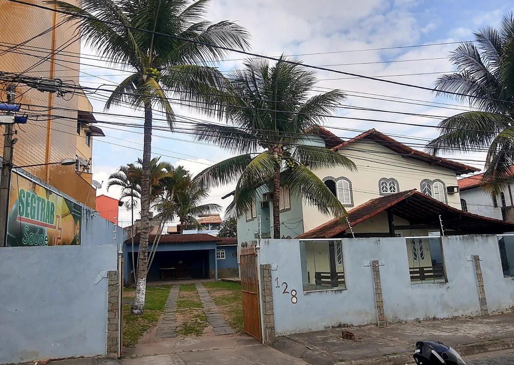

Medicina e segurança do trabalho em Rio das Ostras
Exames ocupacionais (ASO), PCMSO, PGR e eSocial para empresas de Rio das Ostras e região. No Centro da cidade, com agendamento pelo WhatsApp.

Nº 128 · Centro- 5 tiposde ASO: admissional, periódico, retorno, mudança de risco e demissional
- PCMSO e PGRos programas que a NR-1 e a NR-7 pedem da sua empresa
- nº 128R. Luiza Viana, no Centro de Rio das Ostras
Você vai fazer um exame ou cuida da saúde de uma equipe?
Vou fazer o meu exame
Admissional, periódico, de retorno, de mudança de função ou demissional. Veja o que levar e agende pelo WhatsApp.
Agendar o ASOCuido da saúde da equipe
PCMSO, PGR, laudos, eSocial e os exames dos seus funcionários com uma clínica só, aqui na cidade.
Ver serviços para empresas
Como agendar o seu ASO
O agendamento é pelo WhatsApp. Mandando tudo de uma vez, a equipe responde já com o dia e o horário.
- Passo 1
Preencha o formulário
Seu nome, a empresa, o tipo de exame e a função. Leva menos de um minuto.
- Passo 2
Envie no WhatsApp
A mensagem chega pronta para a equipe, sem precisar explicar tudo de novo.
- Passo 3
Receba o horário
A equipe confirma o dia, o horário e os exames complementares da sua função.
- Passo 4
Faça o exame
Leve documento com foto e a guia da empresa. O ASO segue para a sua empresa.
Tudo que a empresa precisa em saúde e segurança do trabalho
Exames ocupacionais (ASO)
Os cinco tipos de ASO, com o médico do trabalho e os exames complementares de cada função.
Exames complementares
Audiometria, acuidade visual, espirometria, eletrocardiograma e laboratório, conforme o risco.
PCMSO
O programa de saúde da empresa, com médico coordenador e o calendário de exames da equipe.
PGR
O inventário de riscos de cada função e o plano para controlar cada um.
Eventos de SST
Comunicação de acidente, monitoramento da saúde e condições do ambiente, no prazo.
LTCAT e adicionais
Laudos das condições do trabalho, de insalubridade e de periculosidade.

“Nada é tão urgente que não possa ser feito com segurança.”
A frase que está na fachada da SegTrab, no Centro de Rio das Ostras.O trabalho da SegTrab é proteger os trabalhadores e resguardar as empresas. Para o trabalhador, é o exame feito com atenção e explicado. Para a empresa, é a documentação em dia e a equipe protegida.
Benefício de saúde para a sua equipe e a família dela
O Meu ParceiRO, clube de benefícios de Rio das Ostras, funciona aqui também. Desconto em consulta, exame e remédio para o colaborador e mais 3 pessoas da família. Não é plano de saúde.
Conhecer o Meu ParceiRONo Centro de Rio das Ostras
SegTrab Saúde
A casa com coqueiros, no número 128, com a faixa verde da SegTrab no muro.
- R. Luiza Viana, 128
Centro, Rio das Ostras (RJ), 28893-470 - Segunda a quinta, 7h às 17h
Sexta, 7h às 16h - (22) 99746-9071
Perguntas que a gente mais ouve
Como agendo o meu exame?
Pelo WhatsApp. Preencha o formulário desta página com o seu nome, a empresa, o tipo de exame e a função: a mensagem já vai pronta, e a equipe responde com o dia e o horário.
O que preciso levar no dia do ASO?
Documento com foto e a guia de encaminhamento da empresa, se ela tiver mandado. Se usa óculos ou lente, leve. Exames anteriores também ajudam.
Quem paga o exame ocupacional?
A empresa. Pela NR-7, os exames ocupacionais são custeados pelo empregador, sem custo para o trabalhador.
A SegTrab atende empresas de fora de Rio das Ostras?
Atende empresas de Rio das Ostras e região. Fale com a equipe pelo WhatsApp para combinar o atendimento da sua equipe.
Sou empresa. Como contrato o PCMSO e os exames?
Mande o nome da empresa, quantos funcionários são e o que precisa pelo formulário da página de empresas. A equipe retorna com a proposta.
O que é o Meu ParceiRO?
É um clube de benefícios de Rio das Ostras que funciona no mesmo endereço. Dá desconto em consulta, exame e remédio para o associado e mais 3 pessoas da família. Não é plano de saúde.
Precisa fazer um exame ou organizar a saúde da equipe?
Mande tudo de uma vez pelo formulário e a equipe responde no WhatsApp.